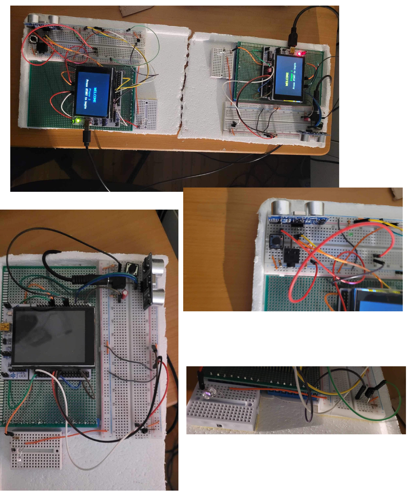
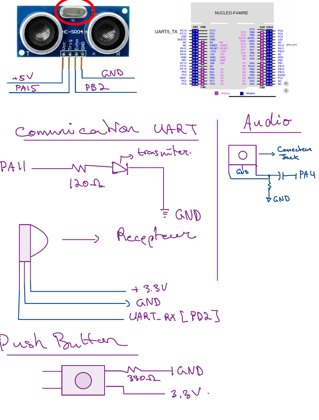

Microcontrollers | Interactive audio
STM32 musical game
An embedded note game combining a display, timing, communication and audio output.
- Status
- Embedded prototype
- Focus
- Embedded
- Tools and methods
- STM32F446 / C / ILI9341

Objective
Coordinate game state, note timing, score and display updates on an STM32-based hardware setup.
Engineering work
- Organize note and game-state handling in C.
- Integrate an ILI9341 display with the microcontroller peripherals.
- Use UART, timers and audio-related interfaces in the application.
- Document the wiring and prototype assembly.
Outcome
The archive includes application source, an IOC configuration, a Keil project and a two-page wiring and montage PDF. The gallery recovers the actual hardware photographs from that PDF.
Scope and limits
The firmware has not been rebuilt for this portfolio. The team demonstration link is provided as an external reference rather than a claim that the website emulates the game.
Engineering workflow
- 01Input
- 02Game state
- 03Display
- 04Audio
Archive gallery 1 item


Evidence and documentation
Project wiring and montage PDF; main.c and guitar.c in the archived STM32 project.